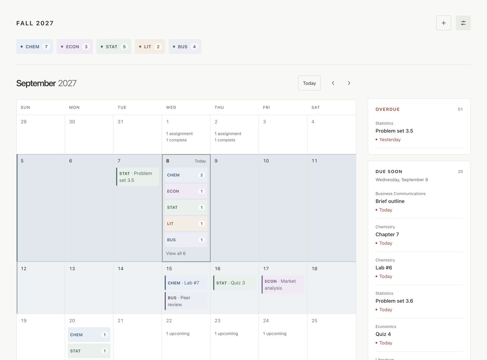
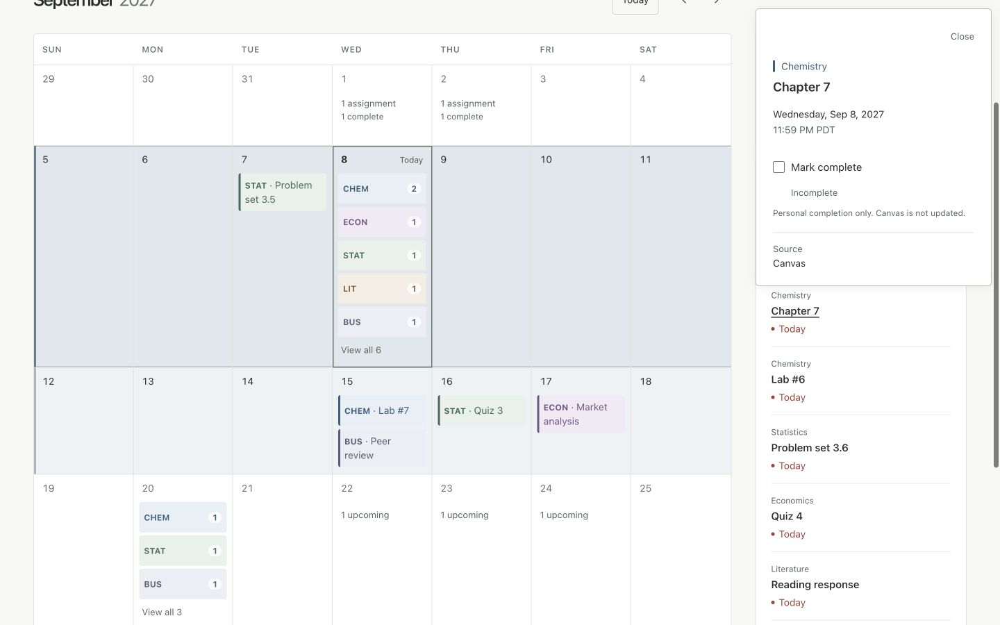
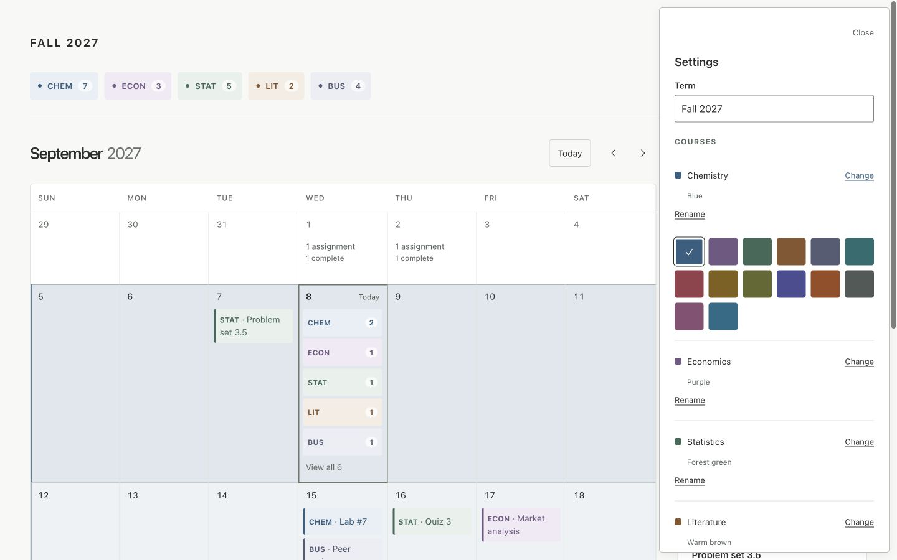

Problem
The default Canvas calendar presents many assignments with similar visual weight, making it difficult to quickly identify courses and prioritize upcoming work.
WEB APPLICATION · PRODUCT DESIGN
Canvas Calendar is a desktop-first student calendar designed to reduce the visual clutter of the default Canvas LMS calendar. It emphasizes the current and upcoming weeks, makes courses easier to distinguish, and surfaces the assignments that need attention first.
React · TypeScript · Vite · ical.js · Cloudflare Workers · HTML/CSS


PROJECT SNAPSHOT

The default Canvas calendar presents many assignments with similar visual weight, making it difficult to quickly identify courses and prioritize upcoming work.
I designed a simpler month-focused interface using clear course colors, an urgency-based Due Soon list, local assignment completion, and progressive disclosure for assignments further in the future.